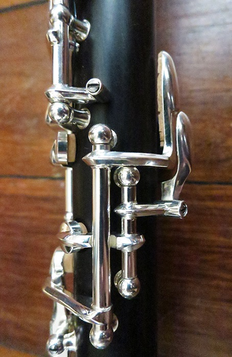
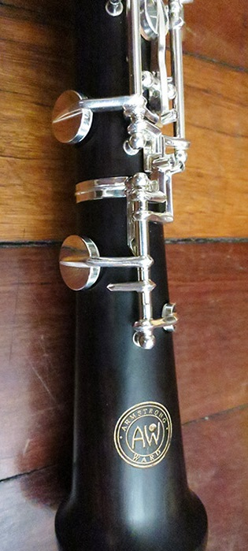
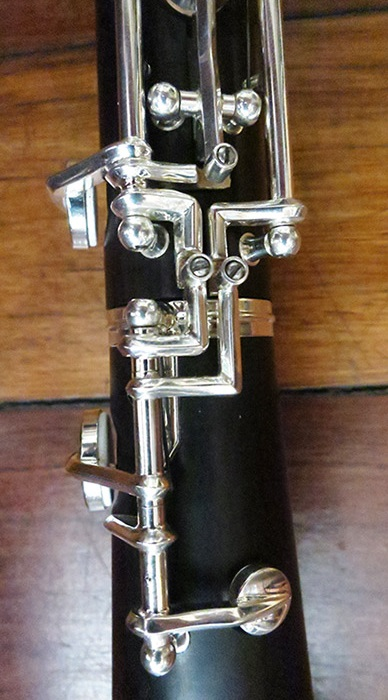
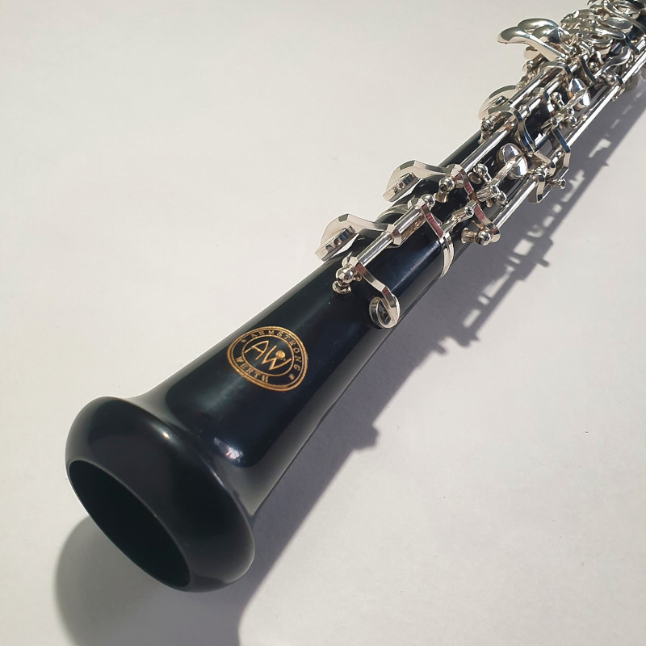
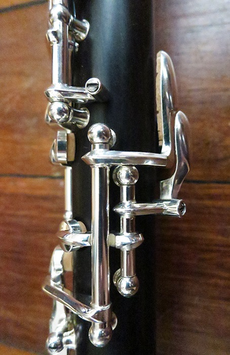
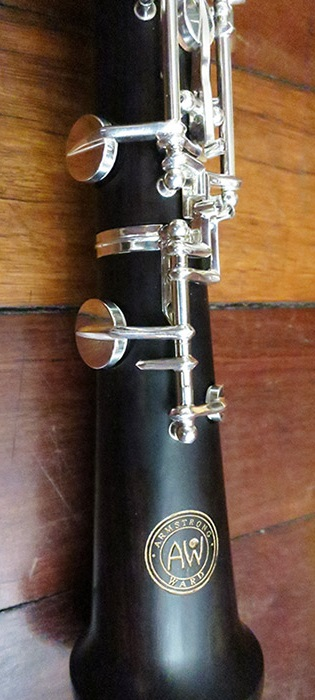
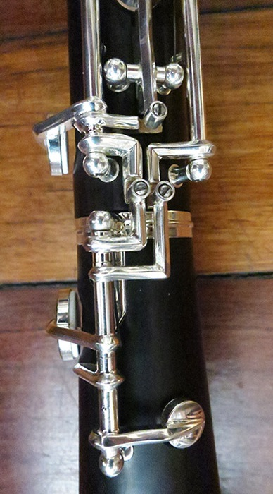
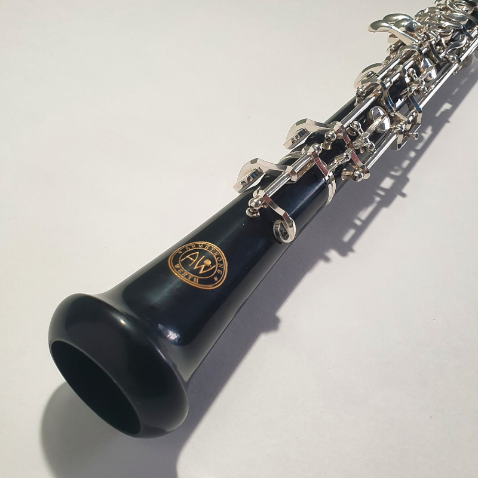

Experience the beauty of music with our exceptional collection of oboes
Experience the beauty of music with our exceptional collection of oboes
 









Our manager will contact you soon.

We are a team of seasoned experts with years of experience in crafting outstanding musical instruments. Our CEO, dedicating a lifetime to music, leads our team, ensuring the highest standards of quality and reliability. We create instruments that compete with the best, demonstrating the experience is not just a matter of years.

Our instruments are the result of mastery, attention to detail, and a deep understanding of a musician's needs


At the inception of its journey toward becoming your personalized companion, your oboe begins as a humble blackwood, thriving in a southern land. Much later, after being felled and segmented, it undergoes a period of stabilization lasting several years — a crucial phase to prevent cracking during subsequent shaping and, ultimately, musical performance.
As an unrefined block, it enters our production workshop, where it assumes its preliminary form. High-precision machines carve out spaces for the future metal fixtures, housing the valves. Meanwhile, in another workshop, all the hardware is prepared.
Once the basic wooden framework is ready, it moves to the assembly master, where fixtures are screwed in, and other elements are added. But this is merely the beginning.
Following the manual adjustment of all metal components, the valves undergo soldering and electroplating (silver or gold coating). The final assembly stage, conducted by the master, involves affixing tempered springs for smooth yet responsive valve action and fitting pads into place.
The ultimate tuning and refinement of instruments are personally overseen by John and his apprentices, the future of the Armstrong-Werth legacy. It is this final phase of labor that holds paramount importance in shaping the sound of the end product.


Immerse yourself in a world where every note resonates with the passion of true craftsmanship.

Our network of authorized retailers ensures a convenient and reliable shopping experience for our valued customers. Simply click on the arrows below to explore and make your purchase from our esteemed partners. Your musical journey starts with a click.


John Armstrong is an Australian oboist and oboe maker with a rich history in the music industry. He has worked for reputable companies such as T.W. Howarth in London, the KG reed company in Shanghai, Rigoutat in Paris, Jinyin and Bailicheng in Hebei, China. His extensive experience and dedication to the craft make him a respected div in the world of oboe making.
Having started making oboes in 1989, John has since been committed to producing high-quality instruments. In 2006, he partnered with oboe maker Tony Ward to create the Armstrong Ward oboe for the Australian market, later rebranded the "KG" oboe in Shanghai. John's continuous dedication to improving oboe manufacturing has led to the development of the Armstrong Werth brand, which aims to provide oboe players with more affordable and rewarding playing experiences through modern manufacturing techniques and quality components. His designs are a reflection of both tradition and the evolving preferences of today's oboists.
At just 13, John's symphony begins at the Sydney Conservatorium High School, where oboe lessons lay the groundwork for his future in London, painted with the hues of a scholarship.

The heart of London becomes a stage for enchantment as John explores the Howarth oboe factory in Worthing. A catalyst moment, this visit kindles a lifelong passion, guiding him through two years as an apprentice before his return to Australia.

A harmonious chord strikes when John seamlessly weaves his musical career with the art of crafting oboes, marking a pivotal transition from full-time musician to a devotee of oboe making and repair.

A significant chapter unfolds as John acquires Tony Ward's oboe-making tools. The first AW oboes, born in 2006, carry the legacy of 'Armstrong Ward,' a collaborative masterpiece drawing inspiration from a cherished French style.

Shanghai becomes the canvas as John shifts AW oboe production, harmonizing with joint ventures for Howarth and Rigoutat until 2012. Collaborations with K.G. oboe reed company and the development of key designs in Korea enrich this chapter.

Shanghai echoes with K.G. oboes, while AW now embodies Armstrong Werth since Tony Ward's 2012 retirement. John's expertise blossoms, sought after as an expert in establishing production facilities.

A new crescendo unfolds as John, invited to a European state, pioneers a locally crafted oboe. Abroad, he orchestrates the continued production of Armstrong Werth oboes, embodying a foreign expert's role.

Rooted in Australia, Armstrong Werth Pty Ltd harmonizes local and international expertise from Europe, China, and Korea. John, a proud member of the International Double Reeds Society, resonates through global conferences and musical instrument trade exhibitions.


Have questions? We've got answers. Browse through our FAQ section to find information about shipping, warranty, returns, and more. If you can't find what you're looking for, feel free to reach out to our friendly customer support team.
We believe in nurturing strong partnerships with like-minded individuals who share our love for music. Whether you are an instrument seller or a passionate musician looking to collaborate, we welcome you to join our community of partners.